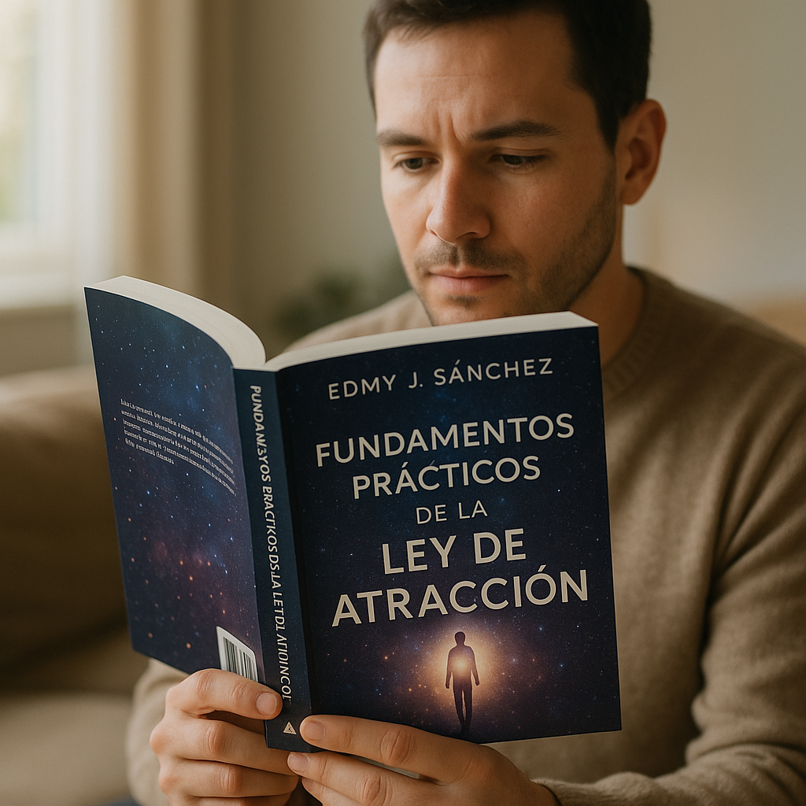
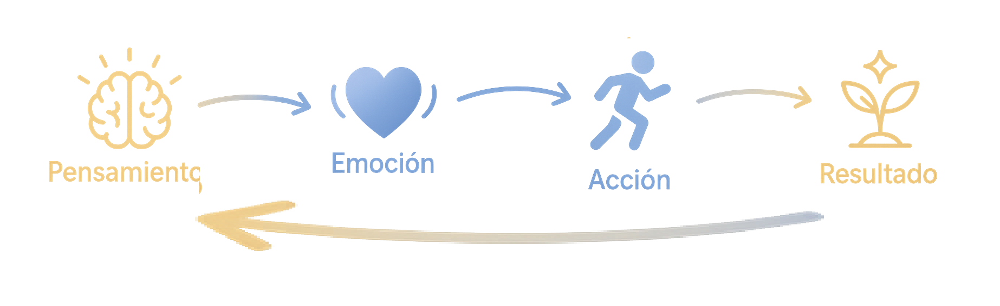
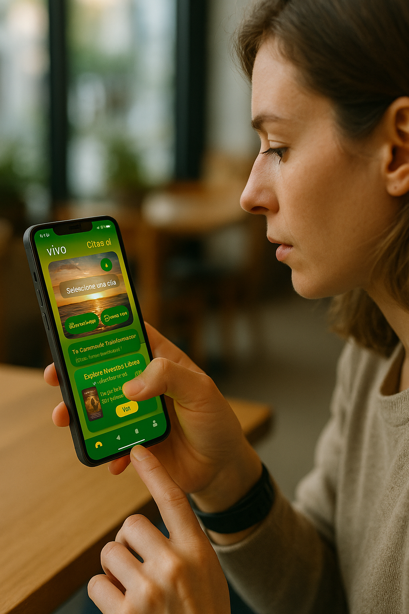

Tu mente crea tu realidad diaria. Domina el método comprobado del Ciclo P-E-A-R a través del libro oficial en Amazon y la aplicación móvil compañera para Android.
Ingresa tu correo electrónico para recibir el resumen oficial en PDF en tu bandeja de entrada y comenzar tu transformación hoy mismo.

“Solo pide y se te dará” suena bien, pero ¿cuántas veces pediste sin recibir resultados? Fundamentos Prácticos de la Ley de Atracción: El Puente para Manifestar tus Sueños en Realidad por Edmy José Sanchez es un mapa claro y estructurado basado en ciencia y sabiduría aplicada para manifestar con intención.
No es magia. Es un método. Tus Pensamientos generan Emociones, que impulsan Acciones y crean Resultados que refuerzan tu realidad.

Selecciona el obstáculo principal que sientes actualmente en tu vida para recibir una recomendación específica:
Fusión práctica de neurociencia aplicada, psicología y sabiduría ancestral para resultados tangibles.
Tus pensamientos repetidos reprograman tu cerebro, fortaleciendo nuevas redes neuronales orientadas al logro de tus objetivos.
La práctica diaria de la gratitud sincroniza el ritmo cardíaco y la actividad cerebral, generando estados emocionales elevados.
El Sistema de Activación Reticular Ascendente filtra las oportunidades del entorno según aquello en lo que enfocas tu atención.
Diseñada para acompañarte todos los días. Personaliza afirmaciones en tu pantalla, registra la gratitud y mantén el foco en el Ciclo P-E-A-R.

Episodios ilustrados estilo cómic para profundizar en el Ciclo P-E-A-R de forma dinámica.
Descubre la fórmula del poder interior...
El viaje hacia tu mejor versión mental...
Explora todos los episodios en nuestro canal oficial.
Personas reales aplicando el Ciclo P-E-A-R y la app móvil en su vida diaria.
"Pasé de sentirme estancada en mi trabajo a emprender mi propio proyecto. La app me ayudó a mantener mis afirmaciones diarias."
"El ejercicio de gratitud cambió mi perspectiva. Ahora veo oportunidades donde antes veía problemas."
"Este libro me hizo entender por qué mi vida se repetía como un ciclo automático. Ahora tengo el control."
"La app me ayudó a sostener mis afirmaciones y cambiar mi enfoque diario. ¡Por fin veo resultados reales!"
Respuestas a las dudas principales sobre Manifestación Consciente y el Ciclo P-E-A-R.
¿Seguirás manifestando por accidente... o de forma consciente con intención?